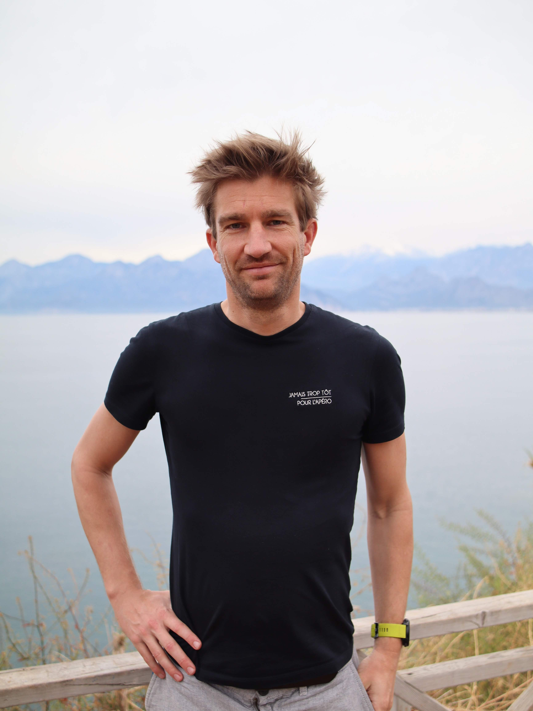

Web developer met ruime ervaring in zowel front-end als back-end ontwikkeling. Sterk in PHP-frameworks, WordPress en Vue.js. Combineert technische diepgang met creativiteit, een scherp oog voor detail en een klantgerichte aanpak — van eerste concept tot live productie.
{{ job.desc }}